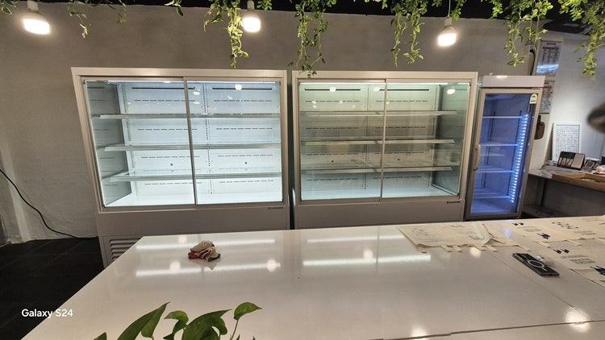
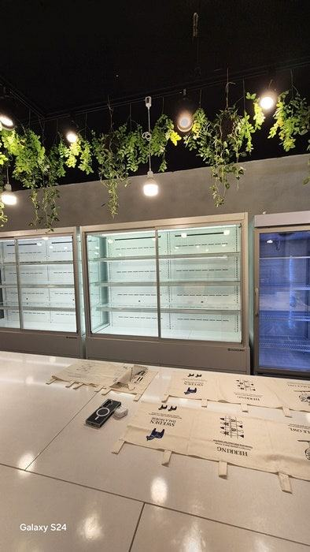
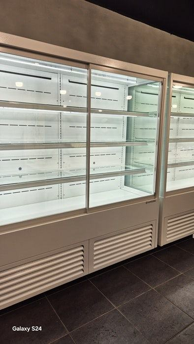
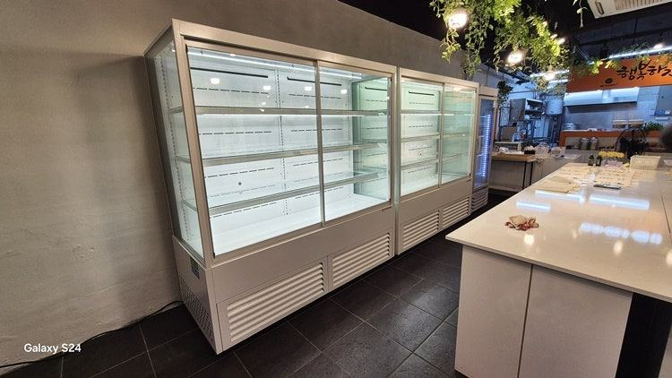
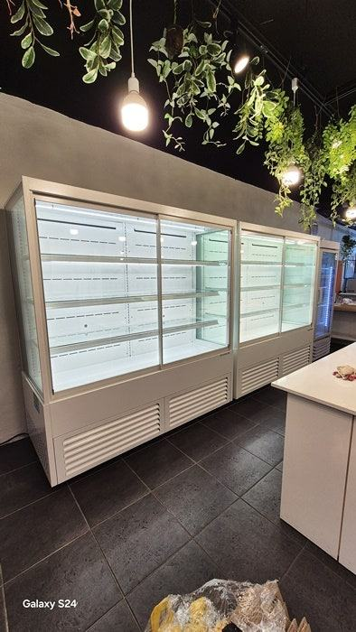
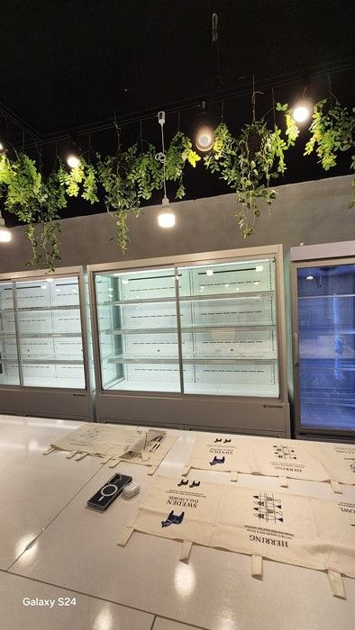
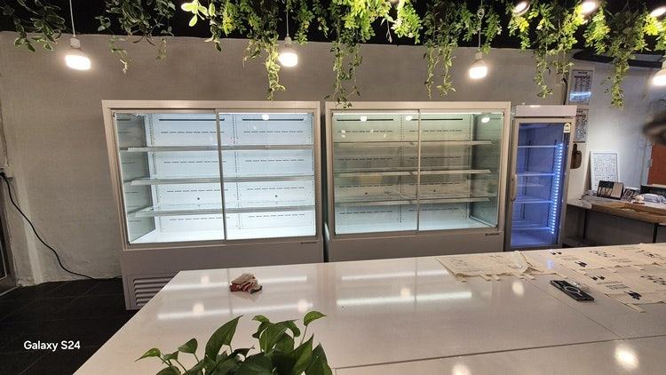

반찬(진열)쇼케이스
반찬쇼케이스 AS, 살 때 확인해야 고장 난 날 덜 잃습니다

반찬쇼케이스 AS는 구매할 때 무상 기간과 수리 주체, 지역 서비스망을 확인해 두는 것이 가장 중요합니다. 반찬은 하룻밤만 냉기가 끊겨도 전량 폐기로 이어질 수 있어, 보증이 불분명한 중고보다 제조사가 직접 수리를 책임지는 제품이 결과적으로 손실을 줄입니다.
안녕하세요. 반찬가게와 식당 진열 냉장고를 직접 만들고 수리까지 맡는 한성쇼케이스입니다.
"사장님, 냉장고가 밤새 멈췄나 봐요. 어제 만든 반찬 다 버려야 할 것 같아요." 반찬가게를 하시는 분들이 가장 듣고 싶지 않은 아침 전화일 겁니다.
반찬은 양념과 국물이 있어 온도가 조금만 올라도 맛과 색이 금방 변합니다. 쇼케이스가 멈춘 그 몇 시간이 하루 매출과 손님 신뢰를 함께 앗아 가죠.
그래서 반찬쇼케이스는 고장이 나지 않는 것만큼, 났을 때 얼마나 빨리 고쳐지느냐가 중요합니다.
오늘은 구매할 때 미리 확인할 AS 조건과, 고장이 난 날 사장님이 먼저 하실 일을 정리해 드리겠습니다.
1. AS는 살 때 정해집니다
고장 난 뒤에 AS 조건을 알아보면 이미 늦습니다. 반찬쇼케이스를 고르실 때 무상 AS 기간이 언제부터 언제까지인지, 콤프레셔 같은 핵심 부품이 포함되는지를 계약 전에 확인하세요.
판매처가 직접 수리하는지도 중요합니다. 유통만 하는 곳이라면 접수 후 제조사로 넘어가는 과정에서 시간이 걸릴 수 있습니다.
반찬가게는 반나절 지연도 큰 손실이라, 제조사가 직접 수리하고 우리 지역에 서비스 센터가 있는 곳이 안심됩니다.
- 무상 AS 기간과 시작 시점을 확인하세요.
- 콤프레셔 등 핵심 부품 포함 여부를 물어보세요.
- 지역 서비스 센터가 있는지 확인하세요.
2. 중고 반찬쇼케이스의 AS
중고 반찬냉장고는 이전 매장에서 얼마나 무리하게 썼는지, 콤프레셔 수명이 얼마나 남았는지 알기 어렵습니다.
겉은 깨끗해도 내부 배관이 낡았을 수 있고, 보증은 대부분 끝나 있거나 불분명합니다.
판매처가 수리를 책임지지 않으면 고장이 날 때마다 사설 수리를 불러야 하고, 원인이 제대로 잡히지 않아 같은 고장이 반복되기도 합니다.
중고를 고려하신다면 제조사와 모델명을 확인하고, 그 제품을 수리해 줄 곳이 있는지부터 알아보세요.


3. 고장 난 날, 이 순서로 움직이세요
냉기가 없다고 느껴지면 먼저 반찬을 다른 냉장고나 아이스박스로 옮기세요. 수리 기사님이 오는 동안 반찬을 지키는 것이 손실을 줄이는 첫 번째 일입니다.
그다음 차단기와 콘센트, 기계실 통풍구를 확인하고, 그래도 안 되면 증상을 정리해 접수하세요. 언제부터 그랬는지, 소리나 냄새 변화가 있었는지, 어느 칸이 문제인지를 함께 알려 주시면 필요한 부품을 챙겨 가 수리 시간이 줄어듭니다.
- 반찬부터 다른 냉장 공간으로 옮기세요.
- 차단기·콘센트·통풍구를 확인하세요.
- 증상과 시점, 명판 사진을 준비해 접수하세요.
4. AS를 덜 부르는 평소 관리
기계실 통풍구의 먼지와 기름때를 정기적으로 청소하고, 뜨거운 반찬은 식혀서 넣으세요. 문 패킹에 양념이 묻어 들뜨지 않았는지, 바닥 배수구가 막히지 않았는지도 마감 때 한 번씩 확인하시면 큰 고장으로 번지는 일을 줄일 수 있습니다.
작은 이상이라도 평소와 다르다고 느끼시면 바로 문의하세요. 일찍 확인할수록 수리 범위도 작아집니다.
체크리스트
- 무상 AS 기간과 시작 시점
- 핵심 부품 보증 포함 여부
- 제조사 직접 수리 여부
- 지역 서비스 센터
- 고장 시 반찬 옮길 공간
- 통풍구·패킹·배수구 정기 점검
중고 반찬냉장고 고장 후 저희를 찾아오신 사례
큰 규모의 반찬가게를 여신 사장님이 초기 지출 부담 때문에 중고 반찬냉장고를 들이셨습니다. 그런데 오픈 3주 뒤, 가장 더운 8월에 밤사이 콤프레셔가 멈춰 아침에 출근해 보니 준비한 반찬이 모두 상해 있었고, 그날 반찬을 전량 폐기하셔야 했습니다.
더 큰 문제는 그 뒤였습니다. 중고 판매처는 판매 당시엔 멀쩡했다며 수리를 미뤘고, 사설 수리를 받았지만 며칠 뒤 다시 문제가 생겨 결국 저희 공장을 찾아오셨습니다.
반찬처럼 온도에 민감한 품목일수록 구매할 때 AS를 누가 책임지는지가 중요하다는 것을 보여 준 사례입니다.
한성쇼케이스 새 제품은 1년 무상 A/S를 지원합니다.










자주 묻는 질문
반찬쇼케이스 무상 AS 기간은 얼마인가요?
한성쇼케이스 제품은 1년 무상 A/S를 지원합니다. 무상 기간이 지난 뒤에도 유상으로 수리를 받으실 수 있습니다.
지방에서도 AS를 빨리 받을 수 있나요?
전국 240여 개 A/S 센터를 운영하고 있어 지방 매장도 가까운 곳에서 대응합니다. 접수는 대표전화 031-986-2458로 해 주세요.
다른 곳에서 산 반찬쇼케이스도 수리해 주나요?
제품 구조와 부품 수급에 따라 달라 바로 답드리기 어렵습니다. 제조사와 모델명, 증상을 알려 주시면 가능 여부를 확인해 안내해 드립니다.
매장 조건에 맞춰 만드는 한성쇼케이스
원하시는 제품 사진과 설치할 공간 사진만 보내 주셔도 매장에 맞는 구성을 추천해 드립니다.
- 전국 240여 개 A/S 전담 센터 운영
- 본사 대량 자재 매입으로 품질 대비 합리적인 가격
- 유럽제·삼성 냉각 콤프레셔 적용
- 국내 최초 쇼케이스 전문 디자이너 상주
매장 폭과 원하는 진열 구성을 알려 주세요. 실측과 견적을 안내해 드립니다.
031-986-2458